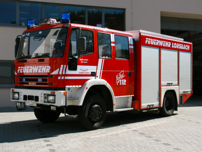

Tanklöschfahrzeug
TLF 16/25
Funkrufname Florian Hofheim 7-22
Unser erstes Fahrzeug bei fast jedem Einsatz. Die Pumpe fördert 1.600 Liter pro Minute, der Tank fasst 2.500 Liter Löschwasser. Über die Brandbekämpfung hinaus trägt es eine umfangreiche Ausrüstung für technische Hilfe: hydraulischen Rettungssatz mit Schneidgerät, Spreizer und Rettungszylindern, Gerätesätze für Bahnerdung, Absturzsicherung und Türöffnung sowie die Strahlenschutzausrüstung für zwei Trupps.
Besatzung: Staffel (6 Personen). Vier Atemschutzgeräte, davon zwei zum Anlegen während der Anfahrt.
- Kennzeichen
- MTK-2297
- Fahrgestell
- Iveco FF 135-E
- Aufbau
- Magirus EuroFire
- Baujahr
- 1996
- Leistung
- 160 kW / 218 PS
- Gesamtmasse
- 12.000 kg
- Maße (L × B × H)
- 7,4 × 2,5 × 3,2 m